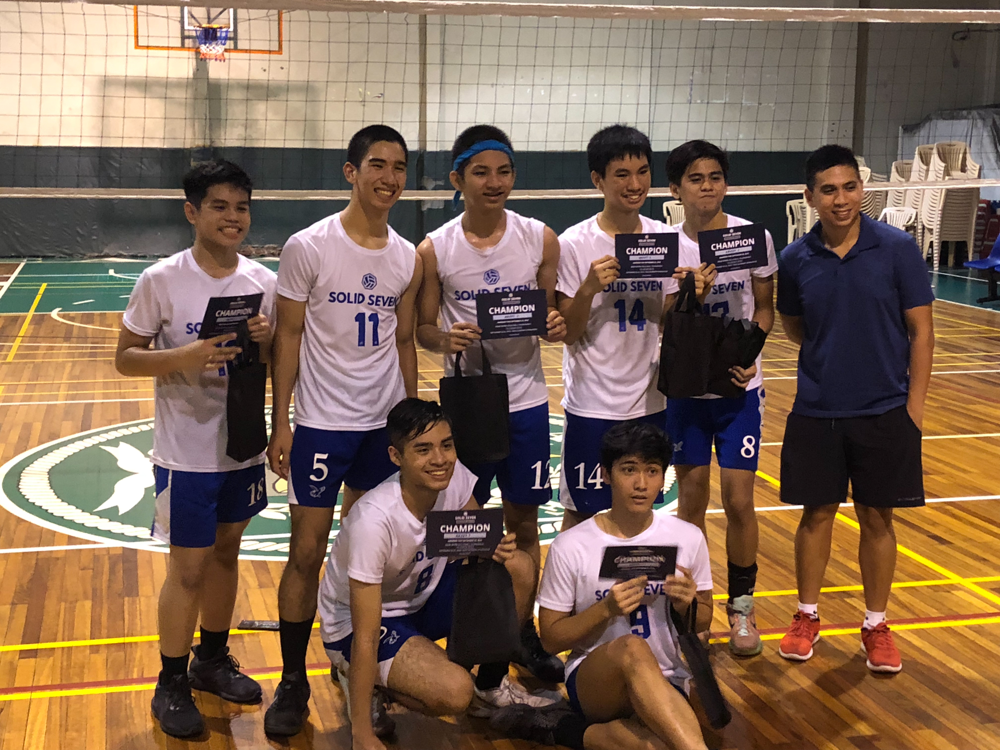
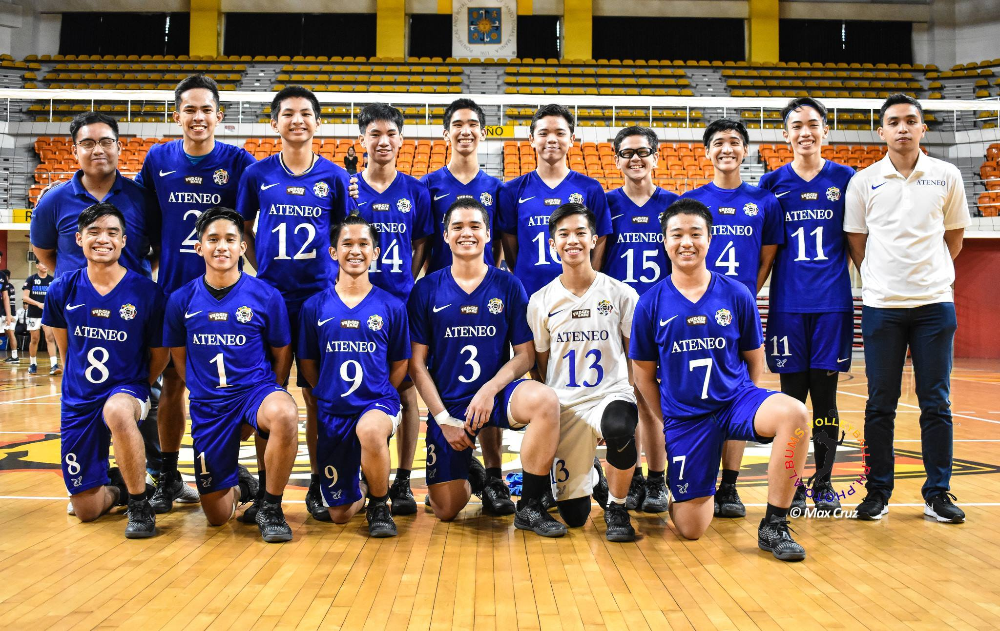
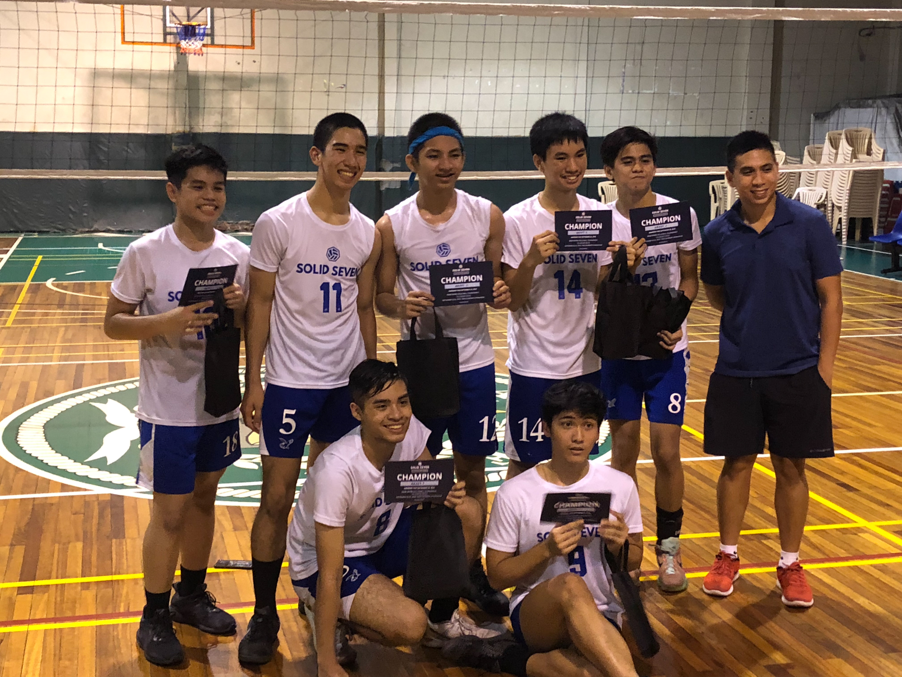
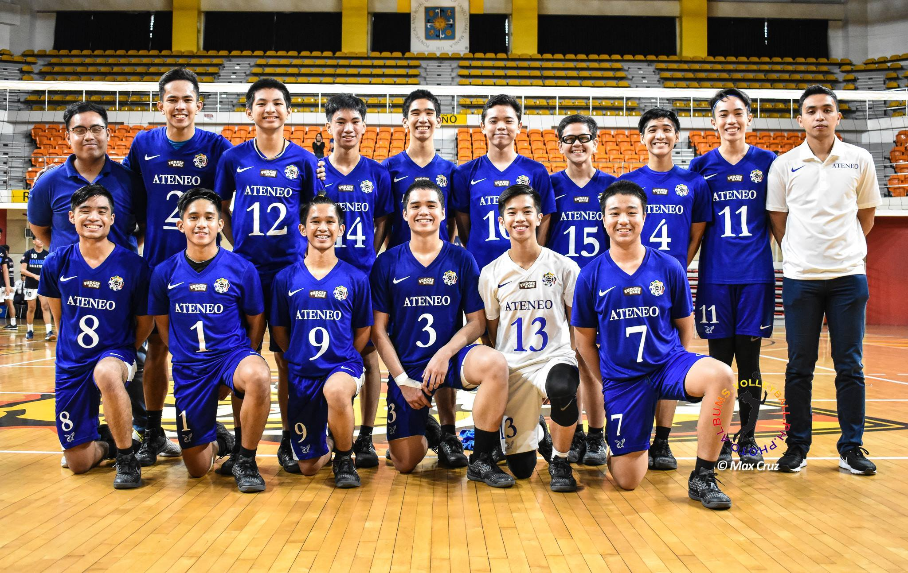

I am Juan Francisco Miguel E. Rios and my nickname is Micko. I am 21 years old, from Commonwealth, Quezon City.
I am originally from Ateneo de Manila and I am a Blue goes green student. I had been from Ateneo all my life and moving to Benilde was a very bug change for me. The environment, the people, the fact that I was in college now, it was a very hard transition. But I am glad I transferred, to experience all these new things and meet so many amazing people.
For my hobbies I enjoy a variety of sports, watching movies of the Horror genre, and very light gaming.
The sports I play are:
- Volleyball
- Badminton
- Ultimate Frisbee
- Handball
- Track and Field
- Swimming
- Tennis
- Table Tennis
I was a varsity athlete in a few of the sports back in Ateneo like Track and Field, Football, Ultimate Frisbee and Volleyball. I was actually a UAAP Juniors Volleyball player during my last couple of years in Ateneo.
  
 
Graphic Designer / Digital Artist
As a multimedia artist, I also have experience in creating digital artwork. I am proficient in both Illustrator and Photoshop, and have created numerous posters, logos, and artworks in the past, although most of these works are personal.
Photograhy
I love taking photos. I specialize mostly in conceptual photography, wherein I can make fictional works of art through the lenses. I can also do other types of photography such as street, food, product, portrait, as well as events.